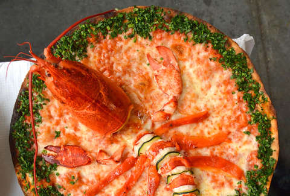
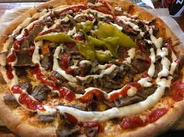
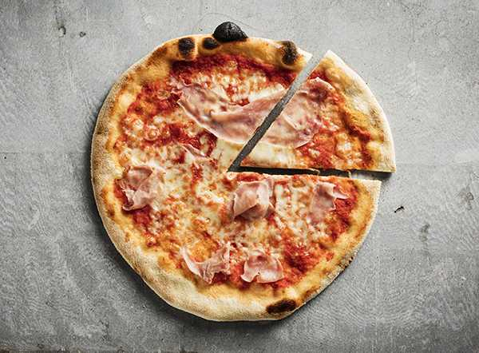
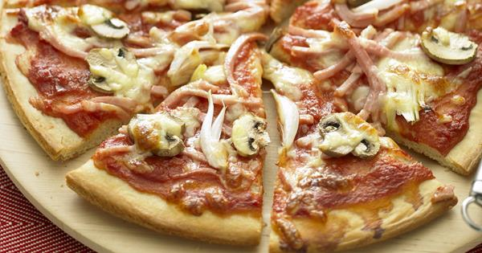
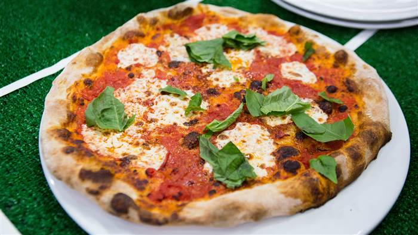
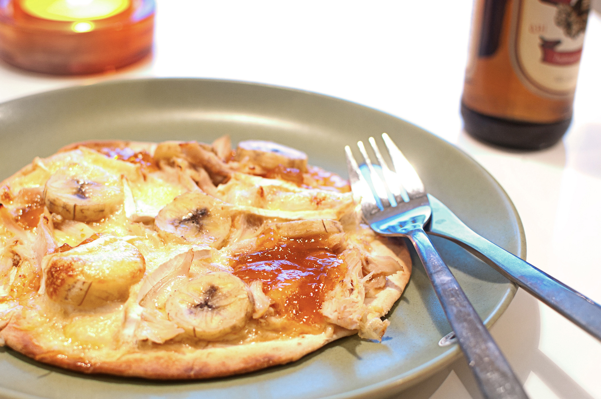
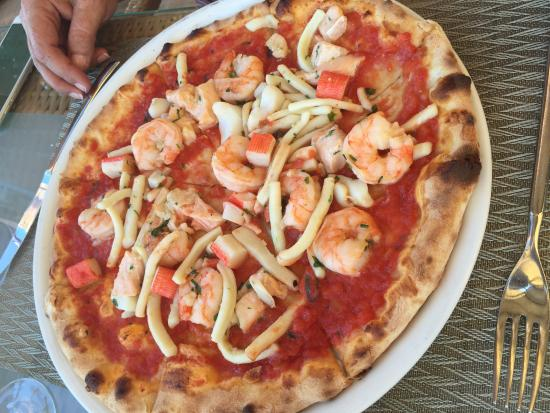
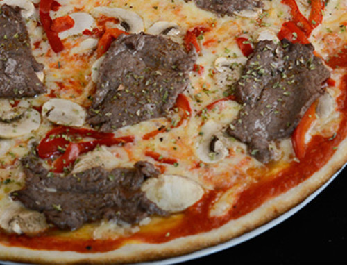
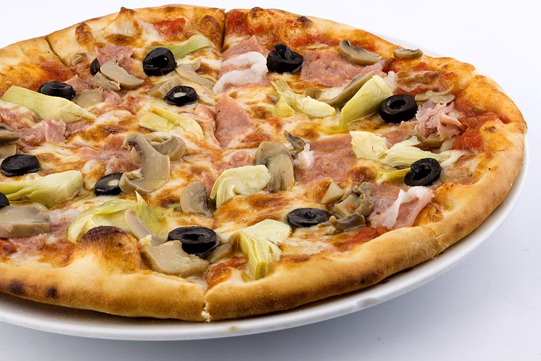

Svenskarnas favoriter
Låt dig inspireras av dessa klassiker som varje dag lämnar pizzoriornas ugnar och som dessutom har lika lite med Italien att göra som banan på en kycklingpizza. Dessa pizzor är rankade som Sveriges favoriter och ger dig en grund till din egen pizza.
Egen Variant
Pizza är egentligen den ultimata maträtten att komponera ihop efter sina egna smaklökars tycke och smak. Detta är naturligtvis anledningen till att den egna varianten är Sveriges vanligaste pizza.
Kebabpizza
Sveriges bakispizza nummer ett, kebabpizzan, hittar vi såklart i den absoluta toppen och ser den segla förbi de italienska klassikerna. Stark eller mild sås?
Vesuvio
Vesuvio är en gammal klassiker som kanske främst tilltalar barn eller de med lite fegare smaklökar. Tomat, ost och skinka är allt som behövs läggas på degen.
Capricciosa
Tomatsås, skinka, champinjoner och ost är vad som krävs för att göra en mästerlig Cappricciosa, som är standard på varje svensk pizzeria.
Hawaii

Skinka, ananas och ost – inga konstigheter. Aloha!
Margherita
Margherita var en av de första pizzorna att se dagens ljus, och bakades första gången 1889 av den italienaren Raffaele Esposito till Neapel-bornas förtjusning. De klassiska ingredienserna är bara tre till talet och består av tomatsås, ost och basilika.
Kycklingpizza
Kycklingpizzan består oftast en smarrig mix av ananas/banan, curry och jordnötter – och kyckling förstås
La Bussola
La Bussola är en enkel och populär pizza med tomatsås, ost, skinka och räkor.
Black & White
Black & White är pizzans Rolls-Royce – höjden av fredagslyx med pizza, oxfilé och bea i ett!
Quattro Stagioni
Pizzan med det vackra namnet ”fyra årstider” är alltid indelad i fyra fält där de vanligaste ingredienserna är skinka, champinjoner, musslor och räkor. Kronan på verket är naturligtvis kronärtskockan i mitten.